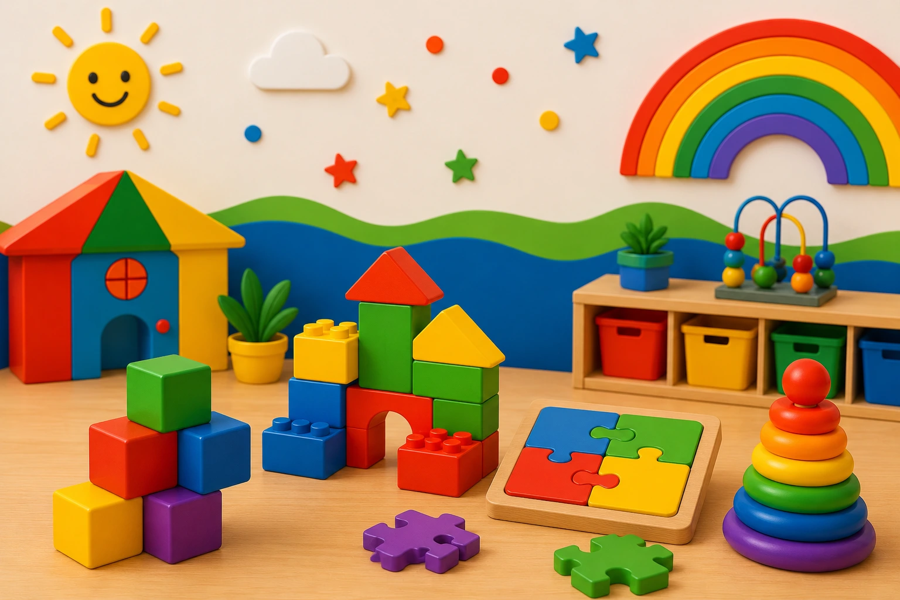

Beneficios del Aprendizaje a Través del Juego
Para los niños pequeños, jugar no es solamente una forma de divertirse. El juego es una de las herramientas más importantes para aprender, explorar el mundo y desarrollar habilidades esenciales para el futuro. A través de actividades apropiadas para su edad, los niños fortalecen su creatividad, su capacidad de resolver problemas y sus relaciones sociales.

1. Estimula el desarrollo cognitivo
El juego ayuda a los niños a pensar, explorar y descubrir. Actividades como construir con bloques, clasificar objetos o resolver rompecabezas fortalecen habilidades relacionadas con la memoria, la atención y la resolución de problemas.
2. Fortalece las habilidades sociales
Cuando los niños juegan con otros, aprenden a compartir, colaborar, respetar turnos y comunicarse de manera efectiva. Estas experiencias son fundamentales para construir relaciones saludables.
3. Favorece el desarrollo emocional
El juego permite que los niños expresen emociones, desarrollen empatía y aprendan a manejar situaciones nuevas en un ambiente seguro y supervisado.
4. Impulsa la creatividad e imaginación
Las actividades de juego libre ayudan a los niños a crear historias, imaginar escenarios y encontrar soluciones originales a diferentes desafíos, fortaleciendo así su pensamiento creativo.
5. Mejora la coordinación motora
Correr, saltar, dibujar, manipular bloques y participar en juegos físicos ayuda a desarrollar tanto la motricidad gruesa como la fina, habilidades esenciales para muchas actividades diarias.
6. Promueve el amor por el aprendizaje
Cuando los niños aprenden jugando, asocian la exploración y el descubrimiento con experiencias positivas. Esto contribuye a desarrollar una actitud favorable hacia el aprendizaje durante toda la vida.
Reflexión Final
El juego es mucho más que entretenimiento. Es una herramienta poderosa que ayuda a los niños a desarrollar habilidades cognitivas, sociales, emocionales y físicas mientras disfrutan cada etapa de su crecimiento.
¿Buscas un programa donde los niños aprendan jugando?
En Koinonia Fun Childcare creemos que el juego es una de las herramientas más importantes para el aprendizaje temprano. Nuestros programas combinan diversión, exploración y desarrollo integral.